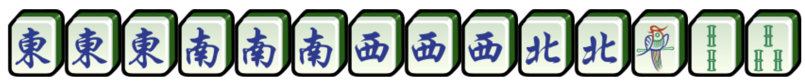
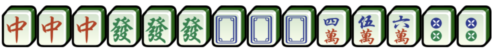

- 一號：春或梅等於東位
- 二號：夏或蘭等於南位
- 三號：秋或菊等於西位
- 四號：冬或竹等於北位
東圈南局，坐西位（1番）、
東圈南局，坐西位 （1番+1番=2番）、
東圈東局，坐東位（做莊）（1番+1番=2番；雙番東）
食糊時，單吊將眼可食出銃，雙將眼時必須自摸才視作坎坎糊。
另計番子牌、清一色或混一色，但不另計門前清，對對糊。

| 番數 | 名稱 | 解釋 | 牌型 |
|---|---|---|---|
| 零番 | 雞糊 | 食糊後數不出任何番種分（花牌不計算在內）。 | |
| 一番 | 無花 | 沒有花牌 | |
| 正花 | 花牌跟座位的風位（門風）吻合。 |
|
|
| 門前清 | 沒有上、碰、槓任何牌而食糊，不可以開暗槓。 | ||
| 平糊 | 只有「上」，沒有「碰」/「槓」的食糊牌型。眼可以是番子。 | ||
| 自摸 | 食糊的牌是自己摸回來的。 | ||
| 番牌｜三元牌 | 「碰」紅中、發財、白板。 | 、 、 | |
| 番牌｜風位牌 | 「碰」與玩家所坐方位相同以及圈數相同的番子。 |
東圈南局（1番）、 東圈南局，坐西位（1番）、 東圈南局，坐西位 （1番+1番=2番）、 東圈東局，坐東位（做莊）（1番+1番=2番；雙番東） |
|
| 搶槓 | 食別人加槓的牌。 | ||
| 槓上開花 | 明槓／暗槓／加槓的槓上自摸，補花後不算，另計自摸。 | ||
| 海底撈月 | 最後一隻牌自摸，另計自摸。 | ||
| 花么 | 只有么九和番子的對對糊，另計對對糊，番子 | ||
| 兩番 | 一臺花 | 集齊同一系列的花牌，不計正花。 | （春夏秋冬）、 （梅蘭菊竹） |
| 三番 | 花糊 | 集齊七隻花牌可即時倒牌，計三番自摸。 | |
| 對對糊 | 全是「碰」，沒有「上」的食糊牌型。 | ||
| 混一色 | 只有一門數字牌（筒／索／萬）跟番子的食糊牌型。另計番牌。 | 、 |
|
| 五番 | 小三元 | 以中、發、白組成兩對「碰」，一對眼的食糊牌型。另計混一色、對對糊加混一色或字一色。 | |
| 六番 | 小四喜 | 以東、南、西、北組成三對「碰」，一對眼的食糊牌型。另計混一色、對對糊或字一色。 |  |
| 七番 | 清一色 | 只有一門數字牌（筒／索／萬），沒有番子的食糊牌型。 | |
| 八番 | 大三元 | 集齊中、發、白三對「碰」的食糊牌型。 |  |
| 大花糊 | 集齊八隻花牌可即時倒牌，計八番自摸。 | ||
| 坎坎糊 | 沒有「碰」、「槓」過的對對糊（暗槓也不可）。 食糊時，單吊將眼可食出銃，雙將眼時必須自摸才視作坎坎糊。 另計番子牌、清一色或混一色，但不另計門前清，對對糊。 |
||
| 十番 | 字一色 | 只有番子的食糊牌型。另計番牌，但不計對對糊。 | |
| 清幺九 | 只有一、九的食糊牌型。不另計對對糊。 | |
|
| 十三番 | 天糊 | 莊家配完補花後自摸。 | |
| 地糊 | 食糊莊家打出的第一隻牌。 | ||
| 大四喜 | 以東、南、西、北組成四對「碰」的食糊牌型。 | ||
| 十三幺 | 以門清集齊十三種么九牌和番子牌，包括：一、九萬；一、九索；一、九筒；東、南、西、北；中、發、白（各一張），再加其中一張做眼。 | ||
| 十八羅漢 | 開了四個「槓」的食糊牌型。不另計對對糊。 |